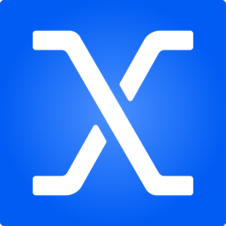
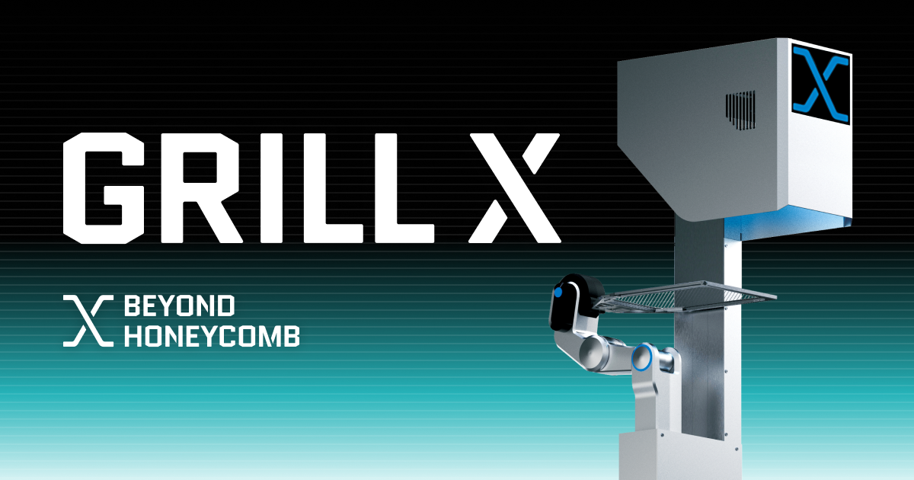
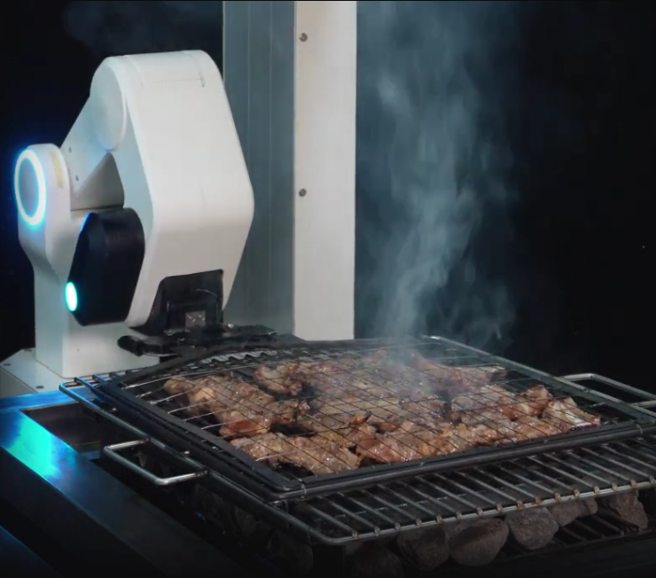
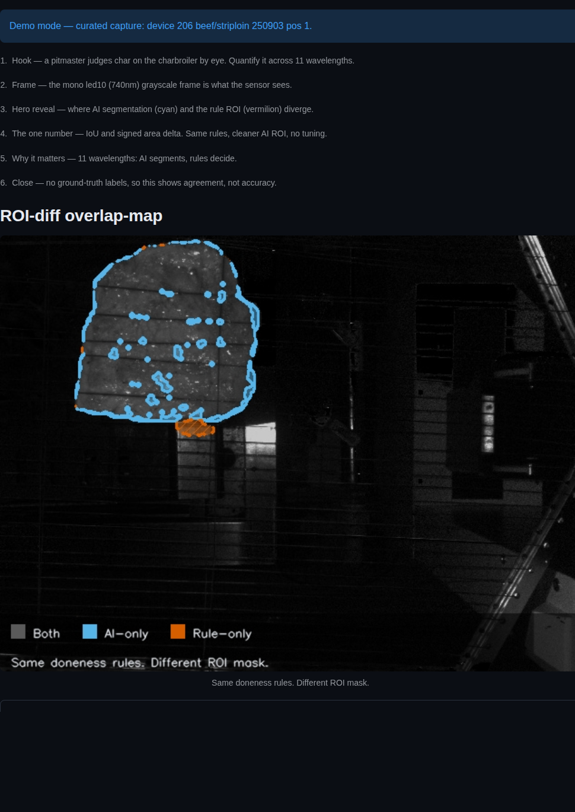
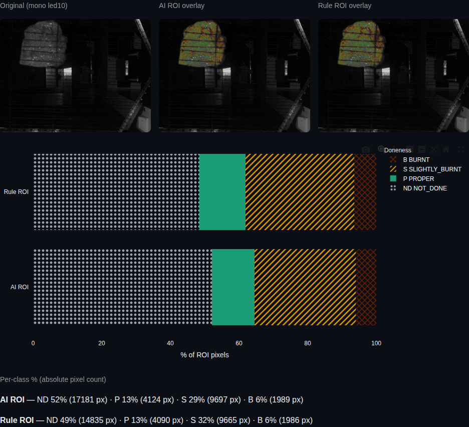
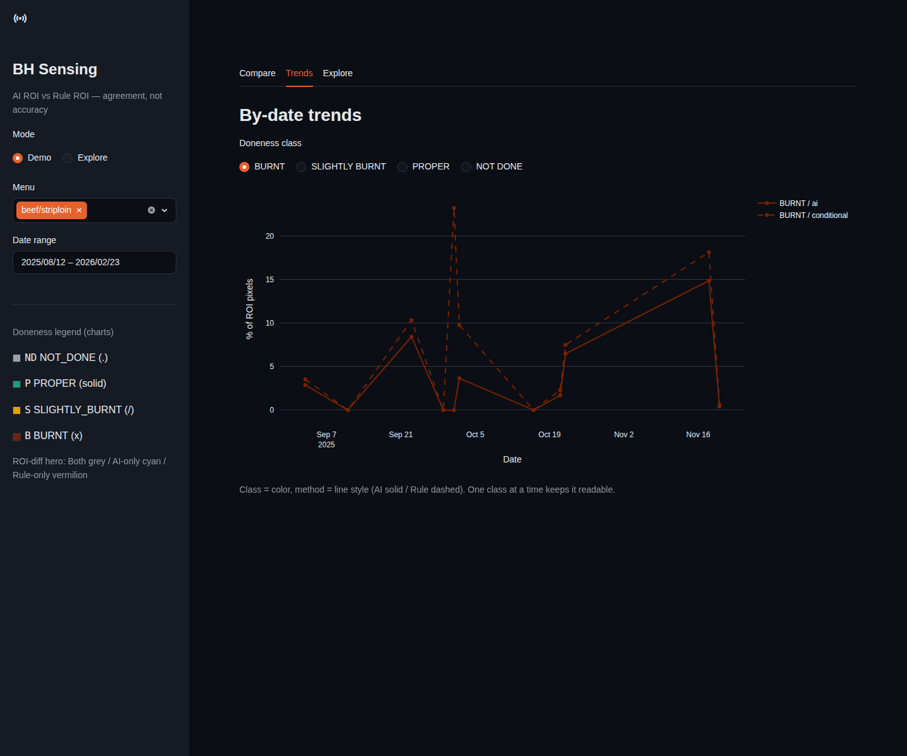
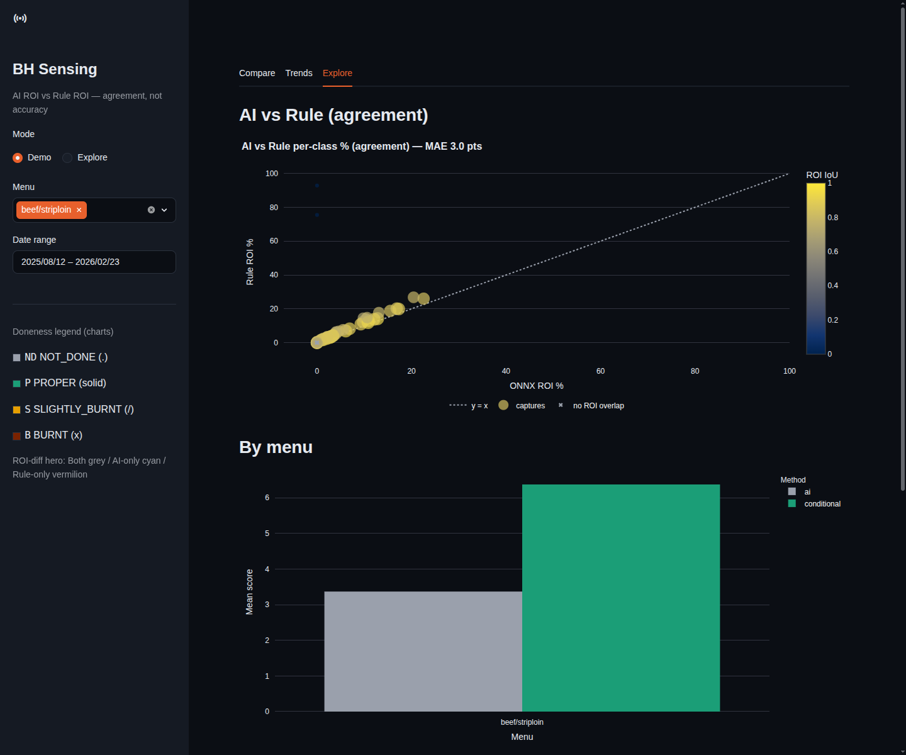

BEYOND HONEYCOMBAn internal dashboard for the team behind GRILL X. It makes the AI's doneness read visible, and confirms it stays consistent on every cut.

Founded in Seoul in 2020 by a team of ex-Samsung Research engineers, Beyond Honeycomb builds AI cooking robots that quantify flavor and reproduce chef-level results on every cut.

GRILL X grills to chef-level doneness on its own. It reads each cut as it cooks and adjusts in real time, so the result is the same no matter who works the line. One button, and it fits onto a kitchen's existing grill.
Judges doneness from the meat itself, not from a fixed timer or temperature.
Captures an expert's technique and reproduces it on every shift.
Sensing, on-device AI and robotics are developed together, and clamp onto any grill.
NAVER and KT cafeterias, plus Andaz Seoul, Korea's first 5-star-hotel AI chef robot.
GRILL X decides doneness from its own read of the meat. For the team building it, that raises a practical question. When the AI makes the call, how do we see what it saw, and confirm the read holds up cut after cut?
Doneness is decided in seconds, inside the machine. The dashboard brings that decision into view, so the team can check it instead of trusting it blind.
There is no perfect answer key for a steak, so the tool never crowns a winner. It compares the AI's read against an independent reference and measures how closely the two line up. The closer they agree, the more we can trust the call.
What GRILL X's sensing detects on the cut as it cooks.
How closely the two line up. High agreement means high confidence.
A separate check, held constant for every cut and every menu.
Agreement, not accuracy. We never claim one read is correct. We show how much the AI agrees with an independent check, and where it does not. That is an honest signal the team can act on.
For any cut, the map paints where the AI's read and the reference line up, and where they pull apart. Strong overlap means high confidence. The gaps are exactly what the team reviews.




A guided Demo mode walks through a single cut step by step. Explore mode opens the full set of captures to filter and compare.
The AI's read holds up against an independent check, and the places it diverges are now visible instead of a matter of opinion. The team can trust the call, and sharpen it where it counts.
Everything runs on an ordinary laptop, with no cloud and no GPU.
The tool never calls one read "accurate" or "better." It reports agreement. Differences are shown plainly, with no color taking sides, and the whole palette is colorblind-safe.
Trust the call. Confidence in the AI's doneness read, at a glance.
Catch drift early. See a change in the read before it reaches a plate.
Grow with the menu. Ready as GRILL X moves to new proteins.